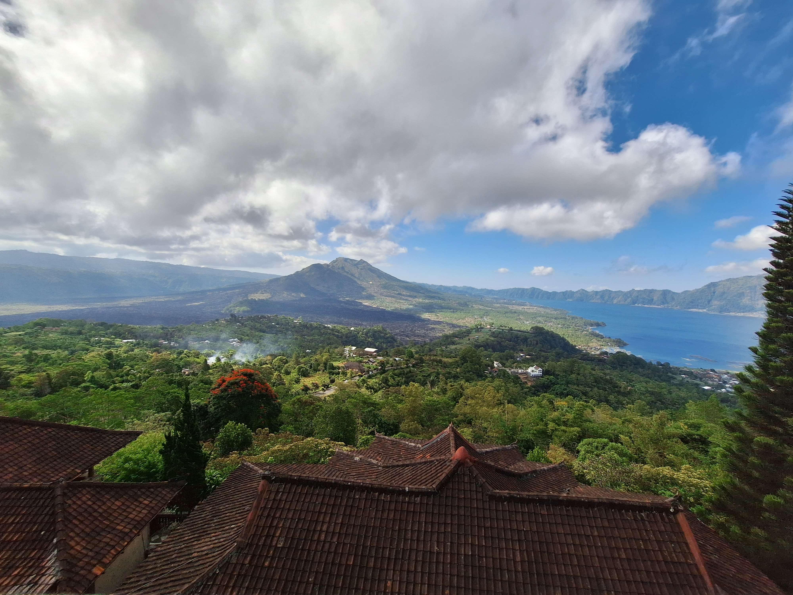

Nazywam się Tomasz i jestem studentem II roku Informatyki na Akademii Górniczo-Hutniczej w Krakowie
Znajdujesz się właśnie na mojej stronie, którą tworzę w ramach mikro projektu na przedmiocie WDAI
Zawiera ona zakładki, dzięki którym możesz dokładniej poznać moje zainteresowania
Jeżeli chcesz się ze mną skontakować to śmiało wypełnij formularz w zakładce rekomendacje a ja odezwę się do ciebie w najbliższym czasie
Podróżowanie
Jednym z moich hobby (chociaż ciężko to tak nazwać)
jest zwiedzanie świata. Wraz ze swoją rodziną, raz do dwóch razy do roku
staramy się zorganizować wycieczkę za granicę, do krajów które przykuły
naszą uwagę ze względu na ich kulturę, zabytki czy sposób w jaki można tam wypoczywać.
Niektóre z ciekawszych krajów które udało mi się do tej pory odwiedzić to:
Japonia
Dominikana
Bali
Madagaskar

Książki
Innym moim zainteresowaniem jest czytanie książek.
Gatunkiem który najabrdziej przypadł mi do gustu jest
fantasy/sci-fi, a w szczególności seria
"Archiwa burzowego światła" autorstwa Brandona Sandersona.
Mimo że jest to seria która wymaga od czytającego dużego
poświęcenia czasowego to mam nadzieję że film będący szybkim
overview serii który zamieściłem zachęci cię do
podjęcia się tej serii.
Muzyka
Ostatnim z moich głównych zainteresowań jest muzyka.
Mimo że osobiście nie jestem twórcą to muzyka towarzyszy
mi praktycznie przez cały dzień.
Jeżeli chodzi o gatunki których słucham to główne z nich to Rock, JPop oraz Vocaloid.
Podobnie jest z grami, które odpalam w wolnym czasie.
Większość z nich to rytmówki takie jak OSU, DDR czy ProjectSekai.
Jeżeli zainteresowały Cię książki, które polecałem we
wcześniejszej zakładce lub chcesz się ze mną skontakować to wypełnij ten krótki formularz
podając swoje dane kontaktowe oraz to co chcesz mi przekazać, a ja odezwę się do Ciebie z moimi sugestiami